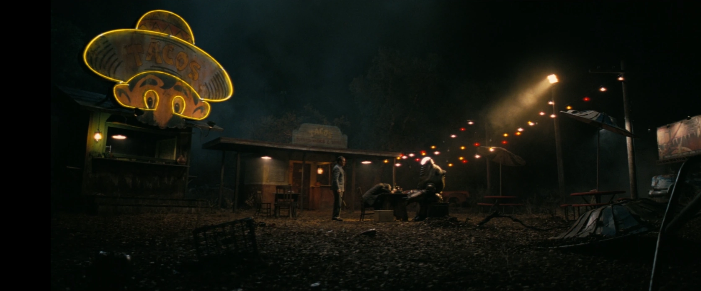

廃墟となったタコス屋
TVシリーズ ロケーション
LOCATION DATA

The abandoned taco stand is a location {{in|FOTV}}.
Background
{{section|FOTV}}In the TV series
The Wrangler
{{section|FOTV}}Notes
In the episode's audio description, this location is referred to as a "ratty motel's courtyard." This is presumably an error.Appearances
The abandoned taco stand appears only {{In|FOTV}} episode "The Wrangler."Category:Fallout TV series locations
Impression
（準備中）
（準備中）